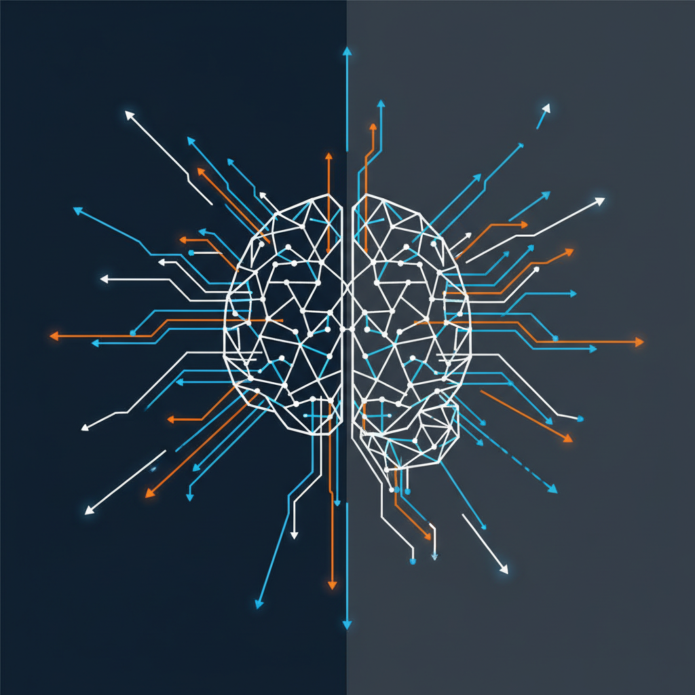
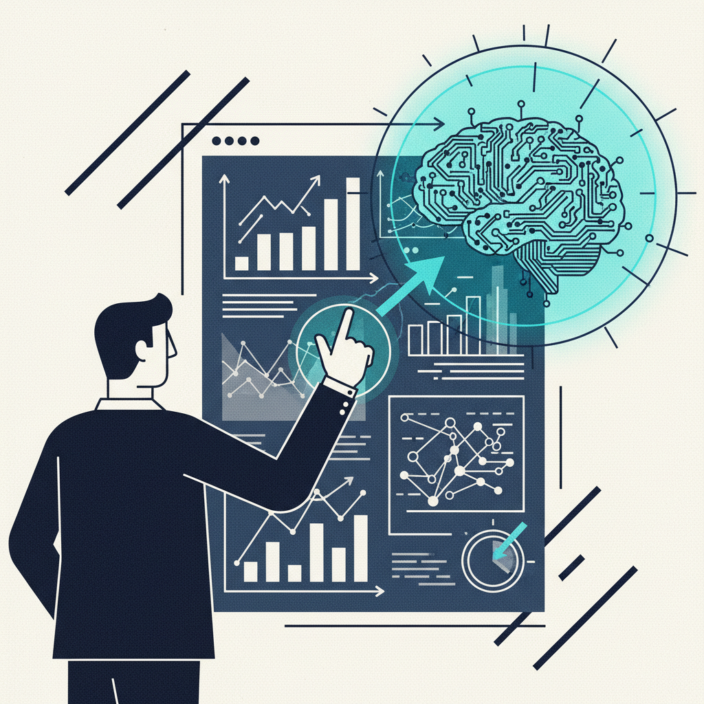
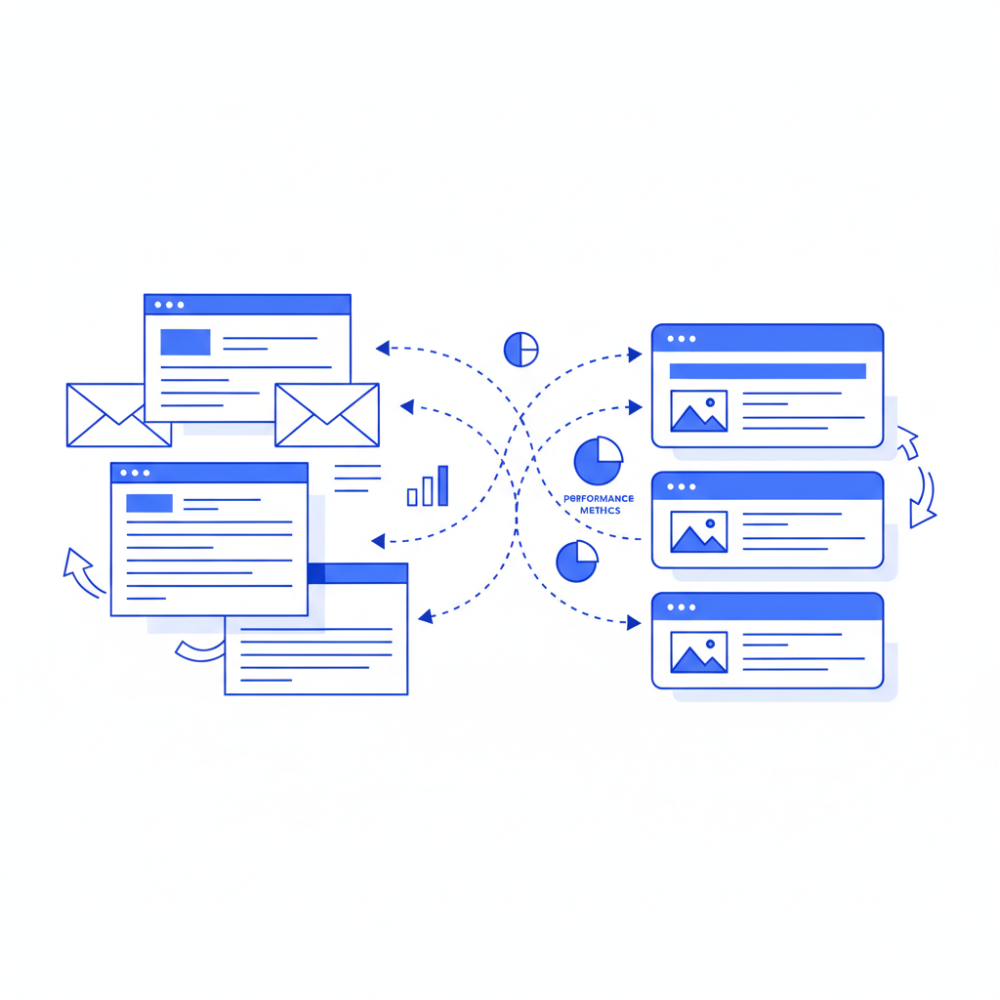

Claude Opus 4.6 Thinking: The Game-Changer for Complex Tasks
Anthropic's Claude Opus 4.6 Thinking model tops problem-solving rankings. Why this extended reasoning breakthrough matters for business strategy and operations.

Google Gemini 3.1 Pro: The AI Reasoning Breakthrough That Changes Everything
Google's Gemini 3.1 Pro achieves 77.1% on ARC-AGI-2 benchmark, marking a 2.5x improvement. What this AI reasoning breakthrough means for your business strategy.
Anthropic's Code Security Tool: Game-Changer or Hype?
Anthropic launches Claude Code Security for autonomous bug hunting. Franz Enzenhofer analyzes what this means for enterprise cybersecurity strategy.

New Relic's Agentic Platform: Real AI for Real Problems
New Relic's Agentic Platform brings no-code AI agents to enterprise observability. Here's why this matters more than the typical AI hype cycle.
WordPress Launches Native AI Assistant, Disrupting Third-Party Plugin Market
WordPress's built-in AI assistant launched February 2026 enables content generation, image creation, and layout design directly in the editor. Comprehensive analysis of features, limitations, and business impact.

Claude Sonnet 4.6: Anthropic's Mainstream AI Just Beat Premium Models in Independent Testing
New benchmarks show Anthropic's Claude Sonnet 4.6 outperforms premium Opus 4.6 on business tasks while staying cost-efficient. Expert analysis reveals the changing AI landscape.

Stop Asking AI What to Write About - Start Solving Real Problems
Businesses are drowning in AI content without purpose. Here's why you should focus on solving customer problems, not feeding the content machine.

Email vs. Chat: A Comparative Analysis of AI Interface Design and Adoption
An analysis of email versus chat interfaces for AI assistants, examining adoption patterns, usability factors, and business implementation considerations based on current research.

Email-Driven AI Workflow: How This Blog Actually Works
Behind the scenes: How Franz AI Blog uses email as an interface for AI-powered content creation. Simple, practical, and surprisingly effective workflow that reduced content creation time by 75%.